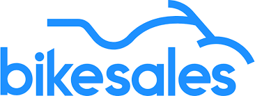

FPT 目前拥有大约 380,000 个 DRM 密钥，用于各种内容包，包括 SVOD、TVOD、AVOD、K+ 和 Special。然而，这个数量可能与实际需求不符，导致成本浪费或收入损失。本项目分析了从 2020 年 4 月 3 日到 2026 年 6 月 1 日为期 60 天的使用数据，以推荐 FPT 应该保持的最优 DRM 密钥数量，以最大化成本效率和收入。

一个交互式 Excel 仪表板，分析 1,000 位自行车购买者的资料，找出对购买决定影响最大的人口统计因素 :: 性别、年龄、收入、婚姻状况、地区和通勤距离。使用 Power Query 进行数据清洗，数据透视表进行分析， 数据透视图 + 切片器实现完整交互。